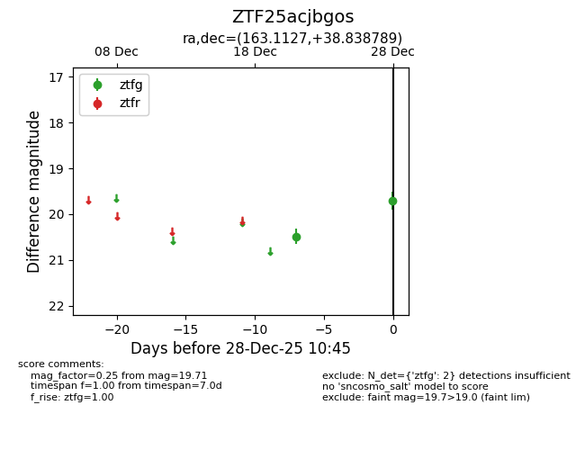
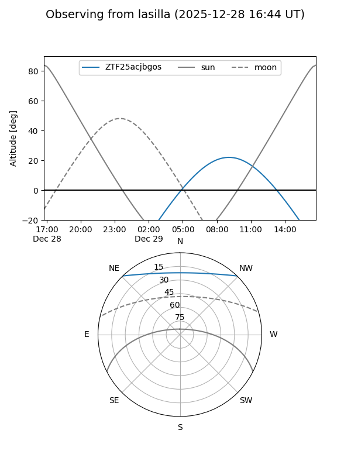

ZTF25acjbgos
Target ZTF25acjbgos at 2025-12-28 10:46
Aliases and brokers:
FINK: fink-portal.org/ZTF25acjbgos
Lasair: lasair-ztf.lsst.ac.uk/objects/ZTF25acjbgos
ALeRCE: alerce.online/object/ZTF25acjbgos
alt names
ZTF25acjbgos (ztf,fink_ztf)
Coordinates:
equatorial (ra, dec) = 163.1127,+38.83879
equatorial (HMS+DMS) = 10:52:27.04,+38:50:19.64
galactic (l, b) = (180.0581,+62.60270)
Flags:
Photometry:
last ztfg=19.71
2 ztfg detections
Lightcurve

Visibility


Additional plots